Recovered article. HTML body is from Common Crawl (text only); images came from the Sep 2022 iOS PDF:
Alternators & Batteries.pdf ·
16 extracted images & links ·
16 of 16 images merged inline (aspect-ratio matched). Original src preserved on each
<img> as
data-original-src.
Contents: Alternator Basics; Alternator Ratings; Measuring Capacity Simply; Alternator Whine; Auxiliary Batteries; Farad Capacitors; Battery Isolators; Battery Imbalance; Battery Boosters;
Alternator Basics
 The first American-made vehicle with a factory-equipped, rectified alternator was the 1960 Chrysler Valiant (some early Model Ts used an AC only system). The basic model was rated at 30 amps. By 1975, Chrysler's average alternator had grown to 75 amps. Today, it is not uncommon for OEM alternators to exceed 150 amps, and a few (right photo) are as big as 250 amps! By the way, if the maximum amperage isn't listed on the alternator's model tag, your dealer service department is your only recourse.
The first American-made vehicle with a factory-equipped, rectified alternator was the 1960 Chrysler Valiant (some early Model Ts used an AC only system). The basic model was rated at 30 amps. By 1975, Chrysler's average alternator had grown to 75 amps. Today, it is not uncommon for OEM alternators to exceed 150 amps, and a few (right photo) are as big as 250 amps! By the way, if the maximum amperage isn't listed on the alternator's model tag, your dealer service department is your only recourse.
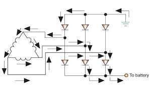
In simple terms, automotive alternators consist of a rotating, claw-pole field which is nothing more than a rotating electromagnet. Both the north and south poles of the field are energized by a single winding. This rotating magnet (rotor) spins inside an inter-woven tri-filer wound stator coil producing a three phase AC output (see schematic at right). This output is full-wave rectified producing a near ripple-free flow of current. By adjusting the amount of field current, the output can be maintained (regulated) at a constant level, nominally 14 VDC (13.6 to 14.4), up to the rated amperage of the unit.
In a load matched condition, the output power of a claw-pole alternator is proportional to the number of field ampere turns squared, often expressed as AT2. One way to increase AT2 is to use two (or more) tri-filer windings, as is the case in most OEM alternators. Instead of 6 diodes, they use 12 (6 for each winding). This also allows the alternator to nearly double its output during idle conditions. It should be noted that some OEM alternators are wound in a Wye configuration, rather than a delta one as shown. In these cases, 8 or 16 diodes are used.
The diodes used in most late-model vehicle alternators are more than just simple silicon diodes. They're Schottky types which reduce the forward voltage drop. What's more, they're designed to break down and act like a reverse-biased zener diode should the output voltage exceed ≈18 volts. This provides load-dump transient (LDT) protection for on-board electronics should a battery connection be lost. If you properly maintain your electrical system, you shouldn't need them, but it is nice to know they're there in case you do!
The methodology used to regulate the output voltage varies with manufacturers. Some alternator regulators pulse the rotor current similar to a switching power supply, while the others (usually older models) use an analog method like a linear power supply. Similar to a switched bench supply, the frequency and/or the pulse width may be varied (independently or together). The RFI from these models sounds like the old cartoon rat-a-tat-tat used for machine gun sounds. Although it may sweep across the bandpass, that is not always the case. If you're plagued with this particular noise, the alternator's regulator is a good place to start looking.
While a bit off the subject, it is important to mention Engine Idle Shutoff (EIS), and the requirements it dictates. EIS shuts down the engine during prolonged traffic stops. When the light turns green, or traffic starts moving again, you let off the brake, the engine restarts, and away you go!
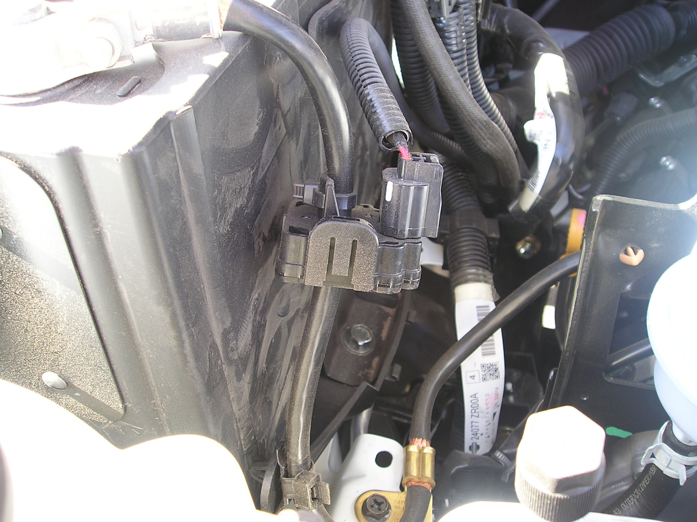
EIS requires more robust batteries, starter motors, larger capacity alternators, and a means of assuring the SLI (Starting, Lights, Ignition) battery has enough reserve capacity (SoC—State Of Charge) to restart the engine when required. Depending on the make and model, Electrical Load Detectors (ELD), Battery Monitoring Systems (BMS), and Voltage Quality Modules (VQM) are often employed. These systems are also interconnected to the engine control computer.
The ELDs use a Hall device to measure the amperage load, and are typically located around the negative battery lead as shown in the right photo. Along with the load, the BMS's battery voltage measurement, and the ambient and engine temperatures, the engine control computer determines whether the engine should be shut down after a specific length of idle time. When it is shut down, VQMs are used to maintain the supply voltages to the various on-board accessories (radios, lights, etc.).
It is getting more complicated to install amateur radio gear (especially amplifiers and auxiliary batteries) in a modern vehicle without circumventing or bypassing ELD, BMS, and VQM devices. However, if done properly, even a second battery can be installed without causing any undue concerns. The first place to start is the Wiring article.
☜Return☜
Alternator Ratings
High output alternators aren't meant for us amateurs. Rather, they're intended to provide the necessary power to defrost our windows, power navi systems, heat our seats and mirrors, and all the rest of the accessories we've become accustomed to. In addition, more and more vehicles are being equipped with electrically-driven water pumps, power steering motors, and even power brake assist. And you don't always know what you're getting when you buy a new vehicle. Vehicle manufacturers know the alternator will only be delivering its full output for short durations, so they cut every corner they can. It is not uncommon for a 160 amp alternator to have a continuous duty cycle of less than 90 amps. Under the extra load imposed by high power mobile applications, the alternator and/or the interconnect wiring may over heat. This is especially true of low content (minimal accessorized) vehicles.
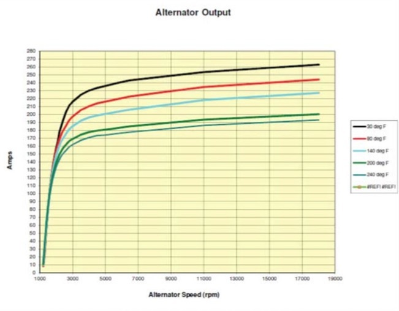
If you do a lot of operating while idling, remember that all alternators have an engine speed/temperature derating curve, like the one shown at left. This chart comes from Ford Motor Company, so your brand may have a different ratings curve. By the way, talking on the radio while in heavy traffic should be discouraged due in part to the distraction it causes when your full attention should be on safe driving. Further, air conditioning, cooling fans, headlights, and slow engine speeds all add up to low alternator reserves. When in doubt, error on the side of safety, and hang up the mic.
If you're contemplating purchasing a new vehicle, consider purchasing a heavy duty electrical system if one is available. The big three all offer heavy duty electrical systems on mid to large size vehicles (and some compact ones), and universally on trucks. These heavy-duty wiring systems are sold under a variety of names. These so called Police Packages are a bit of a misnomer, because most of them cannot be ordered by us civilians as it were. However, they're also called Taxi Service Packages, or as Ford calls them, Modified Wiring Upfit Packages. In Ford's case, there are three fused power circuits, and two dry circuits with access to the engine compartment. They're not large enough for an amplifier, but they're adequate for up to 200 watt radios like the Kenwood TS-480Hx. The package also includes a bigger alternator and battery. Better yet, most Upfit packages include a predrilled and wired 3/4 inch hole in the roof. Though meant for signage, they're perfect for installing an NMO mount.
Another good Internet site for really big amperage demands is Alternator Parts. They both offer a variety of different types and manufacturers. Some of their offerings will supply up to 500 amps, and no one makes a more powerful standard-sized alternator. They even sell a stand-alone, fan-cooled, rectifier package allowing a standard OEM alternator to safely handle more amperage. However, retrofitting a larger alternator gets very difficult and costly on vehicles manufactured after ≈2002. This is due, in part, to the presents of an Electronic Load Detector (ELD) used on most vehicles made after that date.
☜Return☜
Measuring Capacity Simply
In the old days, most all cars were equipped with ammeters connected between the battery and generator. It was easy to see if the generator was delivering enough current. With the advent of alternators, the ammeter lost its effectiveness. The reason is, electronically controlled alternators always put out just the right amount of current. So, except for brief periods, an ammeter would always show "0". In other words, not charging or discharging.
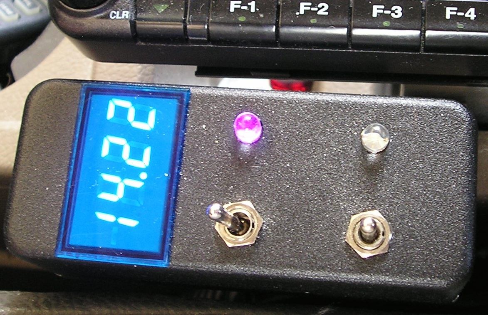
A more meaningful indication is a DC voltmeter, like the Datel unit shown at right. But even a voltmeter is a little superfluous so most cars don't even have them, relying instead on the proverbial idiot light. Since we're not idiots, we need to add a voltmeter (if you don't already have one) to be safe, and not stranded with a dead battery. If you have a voltmeter, here is a good rule of thumb. If the fast-idle voltage (with HVAC and lights turned on) doesn't stay above 13VDC or more while you're transmitting, you might not have enough reserve power for your transceiver.
Since we don't run all of our accessories at the same time, there is usually enough capacity left over to power even a moderately powerful amateur transceiver. In some cases, a lot more. Enough, in fact, to operate a 500 watt mobile amplifier if we're careful with our electrical accessory use. Determining if you have enough capacity isn't all that difficult if you use some basic logic. If your car has a rear window defroster, you have about a 30 amp reserve when it is not in use. This is enough for any of the late model 100 watt transceivers like the FT100, FT857, IC706, IC7000, and even the 200 watt TS480.
If you use an amplifier, you'll need even more reserve. At 500 PEP watts out (≈1,000 watts input), the peak amperage draw is about 100. This requires a reserve of at least 70 amps. If your car has heated seats and mirrors in addition to the rear window defroster, you might have enough. In these cases, a good voltmeter is a valuable asset as long as you pay attention to it.
☜Return☜
Alternator Whine
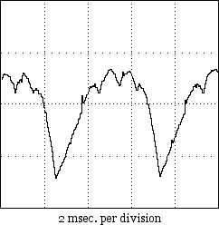
Whine can be caused by a large spike in the AC component as shown in the oscillograph at left; a very rare occurrence nowadays, and one which typically turns on the MIL (Maintenance Indicator Light). This said, almost without exception, alternator whine is caused by a ground loop (another reason to properly wire your installation). In most cases the whine is only apparent on the transmitted signal which is another indicator of a ground loop problem. If this is the case, chances are the cause is the use of a mag mounted antenna, or a poor RF ground return (open coax shield connection).
A related issue to alternator whine, is RFI generated by the diodes themselves. It sounds a lot like ignition and/or injector RFI, so it is difficult to diagnose correctly. You almost never have the issue with late-model stock alternators, but it seems to be the norm with cheaply-(re)built, aftermarket alternators. Again, it pays to purchase a heavy-duty electrical system when they're offered (typically included with trailer towing packages as noted).
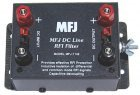
Recently, several manufacturers have started selling power cable filters, sometimes referred to as brute-force filters. They're advertised to cure alternator whine. The truth is, they only mask the real problem. If you have to resort to such devices, it is a sure sign you didn't wire your installation correctly, or you're using a mag mounted antenna. Worse, brute force filters add about .5 volts of drop (perhaps more), no matter how big and ugly they are!
Several companies sell a power lead filter which consists of a small ferrite core with 3 to 5 turns through the core. They're touted to cure all sorts of maladies including alternator whine. The truth is, they're a waste of money, as the very best of ferrite material is nearly worthless below about 1.5 MHz. They might be useful for keeping switching power supply hash out of a transceiver, but if the power supply is really that noisy, you probably should replace it, not apply a band aid to it.
Another popular myth for curing alternator whine is to tightly twist the radio's power cable with an electric drill. Pundits often mention the fact that CAT5 cable pairs are twisted. While the technique does work well for balanced circuits, power cables feeding amateur gear are not balanced!
If you think you have alternator whine, it should sound like this.
☜Return☜
Auxiliary Batteries
There is a lot of confusion about which type of auxiliary battery to use in a mobile installation, and some even question if one is needed at all. If you run a nominal 100 to 200 watt mobile transceiver, you probably don't need one. For those of us who run high power, an auxiliary battery is almost a necessity unless you wish to use $5 per foot welding cables for the inter-connections. For those who do not understand this logic, it's basically related to I2R losses and minimizing IMD products. For more information on these subjects, read the Amplifier, and Wiring articles.
All lead acid batteries generate hydrogen gas during normal operation, and becomes excessive during overcharge conditions. Hydrogen gas is very explosive, and even a minor spark can ignite it. Any resulting explosion isn't a pretty sight, as the electrolyte is sulfuric acid! Since the gas is vented to the outside, flooded batteries should not be used in enclosed areas like the trunk of a vehicle. Instead, use an AGM (Absorbent Glass Mat) battery. They outgas too, but the hydrogen gas is absorbed by the glass mat—unless you overcharge them!
Unlike a flooded battery, an AGM may be mounted in any position, even upside down although that is not recommended. This said, any auxiliary battery should be installed in a battery box, and properly restrained. Doing so, also prevents accidental shorting of the exposed connections. The rule of thumb for battery restraints is 6Gs lateral and 4Gs vertical. The last thing you want is a 60 pound battery flinging acid all over the insides of your vehicle!
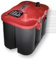
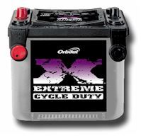
Auxiliary batteries used in high-power applications should be SLI (Starting, Lights, Ignition) types, like the Optima RedTop® shown at left, or the Exide Orbital® shown at right. Remember, this application (amplifier peak current support) is high amperage for short durations, and not long-term reserve capacity like you would need in a portable application. Since both batteries are lead-acid (AGM or otherwise), the batteries may be connected in parallel. In fact, using an isolator on such a set up defeats the purpose which is to keep the voltage as stiff as possible. Quite obviously we need to isolate them with fuses in case the wiring gets shorted.
Please... don't assume circuit breakers are a substitute for fuses! Remember, under direct short conditions, a typical lead-acid battery with an ESR (Equivalent Series Resistance) of .003Ω, will supply over 3,000 amps of current! This can easily weld the contacts of a circuit breaker together, and cause the battery to self destruct!
It should be obvious that safe handling of batteries is imperative. When connecting or disconnecting batteries, the negative lead should be removed first, and installed last. Further, it is best to keep their plastic post caps on until you actually make the connections to any battery.
Here's another important point to remember. Batteries designed for marine applications are not the battery of choice for any mobile installation, the fact they have screw terminals notwithstanding. A battery rated for marine use is designed to maintain at least an 80% SoC (state of discharge) after sitting uncharged for 12 months or more. They are a form of SLI battery, but typically have less starting amps and less reserve power than a true SLI. Incidentally, the terms Marine and Deep Cycle seem to be synonymous terms at least in the amateur community. They're not, even though some battery manufacturers would have you believe otherwise.
There are batteries designed to be discharged lower than 50% SoC, yet maintain a reasonable charge-cycle life (≈150-200). This is not the type of battery you want to use, unless you're operating portable. Even then, they have to be sized based on their duty cycle. In the case of high power mobile, it is the peak current capability of an AGM battery that is ideal for the application.
It is not recommended to mix battery types (i.e.: lead acid interconnected with a lithium iron phosphate), even if a battery isolator is used. The reason is simply that every battery type has its own charging parameters.
If you want to know more about battery technology than most engineers, then visit Battery University! Better yet, the ARRL sells the third edition of the book the site is based on, Batteries in a Portable World, by Isidor Buchmann. If you're into batteries for any application, this book is the definitive source.
☜Return☜
Farad Capacitors
Farad-sized capacitors, sold in the automotive sound marketplace, range in capacitance from ≈1 to 5 Farads. They're sold as voltage buffers and cure-alls for all sorts of maladies, and have an almost mythical following. But contrary to popular belief, Farad-sized capacitors are not a voltage drop fix for an under-powered and/or inadequately-wired installation. Nor do they extend the charge cycle life and/or SoC of a stand-alone battery system. The reason is simply because they're not a power source—they're a power drag!
Worse, their ESR (equivalent series resistance) is a bit more than a lead-acid battery's, yet they cost nearly as much! Their efficiency hovers around 90%, adding insult to injury. Further, they're over-voltage, dead short, and fast charging intolerant. Abuse one, and it will unglue with spectacular results! In any case, their use in any amateur radio installation is questionable, especially so when they're not properly fused. Fusing incidentally, doubles their ESR, further eroding their efficiency.
And for those folks who believe they'll cure alternator whine, are in for a rude surprise! The best advice? Forget about them! If you want to know why, read this article.
☜Return☜
Battery Isolators
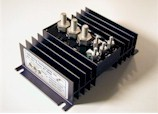
The only time batteries need to be isolated in a mobile application (other than RVs) is in portable operation. Their use in high power applications should be discouraged for several reasons, not the least of which is SoC (State Of Charge) considerations. Simple diode isolators will always have forward voltage drop of about 1 volt, and they can also play havoc with the charging circuitry in some vehicles, leading to illuminating the MIL (Maintenance Indicator Light). This leads some folks to use isolation relays, and they too have their drawbacks. But there is one brand of isolator which combines the best attributes of both, and that is the one made by Hellroaring®. It uses FET switches in its design, which lowers its forward voltage drop, and makes it remotely controllable. This fact allows all of the batteries (two or three) to be combined if necessary. It is competitively priced, and available directly from the factory. If you just have to use an isolator to stay warm, and fuzzy, this is the one to use.
 Perfect Switch® also makes isolators and switches for high current applications, and both employ FET technology. One of their units is shown at left. One very good advantage is there are no contacts which could fuse together in a dead-short scenario. In fact, drawing current over their rating will cause them to disconnect, and require a reset. This is about as fail-safe as you can get. Proper fusing is still required, however.
Perfect Switch® also makes isolators and switches for high current applications, and both employ FET technology. One of their units is shown at left. One very good advantage is there are no contacts which could fuse together in a dead-short scenario. In fact, drawing current over their rating will cause them to disconnect, and require a reset. This is about as fail-safe as you can get. Proper fusing is still required, however.
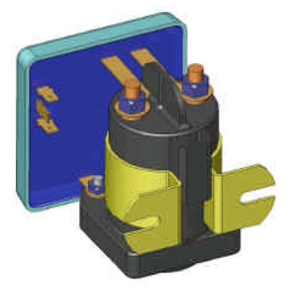
Solenoid relay type battery isolators are available from a variety of suppliers. The one shown at left is a model 1314-200 from Sure Power® division of Cooper Industries, better known by their fuse line moniker, Bussmann®. Electronic circuitry controls the engagement of the solenoid based on the voltage differential of the main and auxiliary battery, but can be controlled manually.
Just for the record, a number of these units shipped to Australia and the European Union between 2009 and 2011, had defective capacitors which can cause the unit to overheat, and potentially catch fire. Information on the factory recall is on Cooper Industries web site.
Lastly, most alternator circuits incorporate a fuse. If you suddenly connect a fully discharged auxiliary battery to the charging circuit, it is possible to draw enough current to blow this fuse. Obviously you should keep a spare fuse on hand, and you should also follow Hellroaring's recommendation about delaying the FET closure until the current and voltage stabilize.
There are a couple of important items to keep in mind when using any isolation technique. First, most automobile manufacturers use some form of BMS (Battery Monitoring System). Suddenly connecting a second battery can cause fault codes to be written to the OBD II memory, which will turn on the Maintenance Indicator Light (MIL). It can also cause the main battery fuse (≈120 amp fuse) to blow. In any case, you should carry a spare. Incidentally, the battery fuse in most modern vehicles are OEM proprietary. Read that as expensive!
☜Return☜
Battery Imbalance
Almost no matter what you do (battery isolator use notwithstanding), eventually there will be a differential in battery voltage between the main (SLI) battery, and an interconnected second battery. The causes are a bit esoteric, but are due mainly to small resistances in the wiring, fuse holders, the fuses themselves, and even the connections. While one wouldn't think a few milliohms (thousandth of an ohm) could make a difference, indeed it can. It is for this reason that wiring maintenance should be routine.
All connections should be checked to make sure they're tight, not frayed, corroded, worn, or showing signs of overheating. Battery connectors should be checked with a DVM between the battery post, and the battery clamp even when they look perfectly good. Here is how you do it.
 First, never use an ohmmeter, digital or otherwise! After all, the connections are under power! Rather, set your DVM (analog meters are not accurate enough) to auto or its lowest voltage setting. Measure across connections. That is to say, between battery and the clamp, across a fuse holder, or any other connections that is screwed, bolted, or clamped together. Any reading over about .015 volts is excessive!
First, never use an ohmmeter, digital or otherwise! After all, the connections are under power! Rather, set your DVM (analog meters are not accurate enough) to auto or its lowest voltage setting. Measure across connections. That is to say, between battery and the clamp, across a fuse holder, or any other connections that is screwed, bolted, or clamped together. Any reading over about .015 volts is excessive!
If need be, any connection should be cleaned and/or re-tightened and/or reclamped to reduce the voltage differential to less than .01 volts per connection! Yes! It is that important to assure long battery life, and good performance from your mobile!
Another valuable tool, especially for high power installations, is a clamp-on ammeter. The one shown at right is made by Mastech® MS2108A, and the Amazon price hovers around $50 delivered. In the 40 amp DC range, it will measure down to .02 amps which is adequate for running down parasitic loads. The high range is 400 amps which is large enough to measure starter motor current in most cases.
When using one of these to measure amplifier current draw, here's something to keep in mind. In high power installations, the initial current draw from the rear battery and the feed from the alternator will be roughly equal. However, as the initial surface charge of the rear battery dissipates, the amperage draw will appear to reverse (negative reading). This is a normal occurrence because the battery is now being charged. Remember, the rear battery is there to help handle the peak loads; the real power supply is the alternator itself.
☜Return☜
Battery Boosters

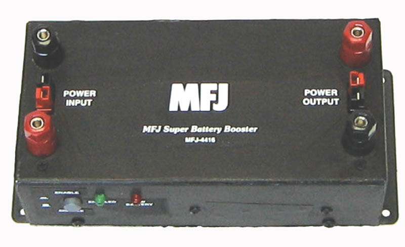
In order to maintain a solid 13.8 volts to operate the radio, a lot of amateurs opt to use a Battery Booster. Known by at least a dozen names, they act like a switching power supply, and although the battery voltage drops, the output remains steady. The one shown at left is a W4RRY unit, and the one below right is the MFJ unit. By the way, the November, 2008 issue of QST has a product review on these units including one made by TGE (now out of business).
Most of these units include a low voltage cutoff, but some don't which can lead to problems. As stated above, any nominal 12 volt lead acid battery is considered discharged when the voltage drops to 10.5 volts under its C-rated load. Discharging them lower than this will drastically reduce the life of the battery. Without low voltage protection, the typical end result will be a ruined battery.
Incidentally, none of the current battery boosters have over-voltage cutoff.
The question remains; is a battery booster is needed? There is no clear-cut answer. Certainly for portable operation, they have a definite use. However, in most mobile-in-motion operation, where the wiring is correctly sized, and the alternator is of adequate amperage, their use is questionable. There is also an issue with respect to battery monitoring systems (BMS), in that drawing the battery voltage down past a preset point, can cause the MIL to illuminate, and a code being written to the OBDII. There is also an issue with cost if you run an amplifier as the 120 amp TGE unit is over $500. With adequate wiring and charging circuitry, the need is perhaps moot.
☜Return☜
Home


{kind=link}
{kind=link}
{kind=link}
{kind=link}
{kind=link}
{kind=link}